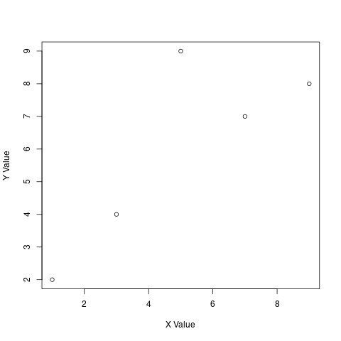
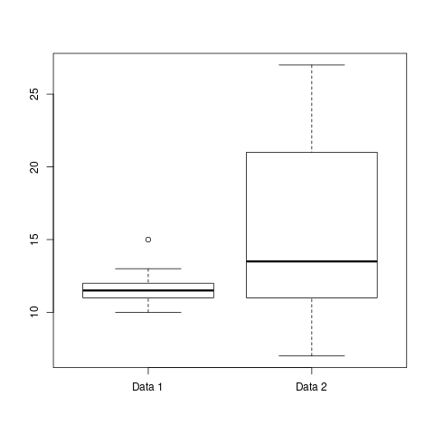

初心者用 R 言語講座演習ノート
12.グラフの作成
R では簡単にグラフを作成する関数が用意されています。
plot 関数
二次元プロットを作成することができます。
例えば以下のように x 座標と y 座標の値をそれぞれベクトルとして与 えると、(1,2), (3,4), (5,9), (7,7), (9,8)の点にプロットを作成でき ます。
## ## 12. グラフの作成 ## x <- c(1,3,5,7,9) y <- c(2,4,9,7,8) plot(x, y, xlab="X Value", ylab="Y Value")

追加引数の中味: xlab, ylabでそれぞれx軸、y軸のラベルを指定しています。
barplot
棒グラフを作成することができます。
以下の例では、各棒の高さに対 応させるベクトルおよびそのラベルを変数 x に与え、barplot(x)を呼び出しています。
## ## 12. グラフの作成 ## x <- c(1,2,3,2,10,1) nam es(x) <- c("A", "B", "C", "D", "E", "F") barplot(x)
hist
ベクトルで与えられた数値群のヒストグラムを作成する関数です。
## ## 12.3 ヒストグラム ## x <- c(3.2, 1.2, 4.2, 2.3, 3.4, 5.9, 5.2, 5.3, 4.1, 5.2, 3.2, 1.4) hist(x, xlab = "Test Value", main = "Test Histogram")

main によってヒストグラムのタイトルを指定しています。
boxplot
は複数のベクトル中に含まれる値の分布を表す箱ひげ図を作成します。
## ## 12.4 箱ヒゲ図 ## x1 <- c(11,12,11,10,11,11,12,13,15,12,11,10,12,13) x2 <- c(20,21,27,9,12,23,23,12,11,9,21,15,7,12,12,9,23,15) boxplot(x1, x2, names=c("Data 1", "Data 2"))

- 中央値
- 外れ値
- 外れ値を除く上位25%
- この範囲に50%の データが分布する
- 外れ値を除く下位25%
課題 12:
課題 7-1 で与えられた表に関して、国土面積と人口の関係をプロットしてみまし ょう。